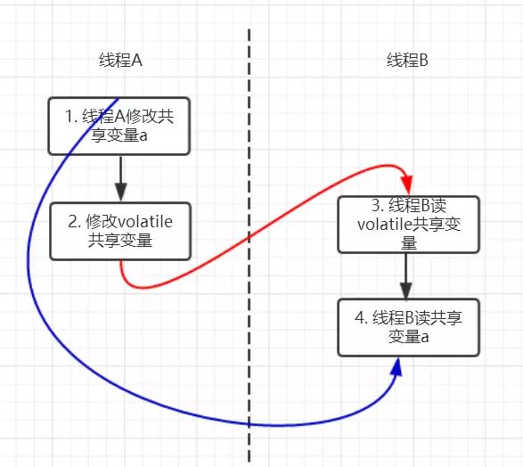
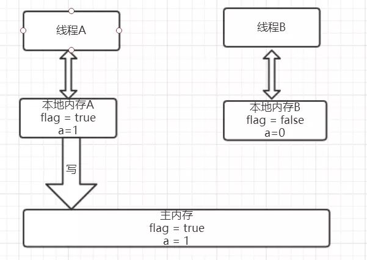
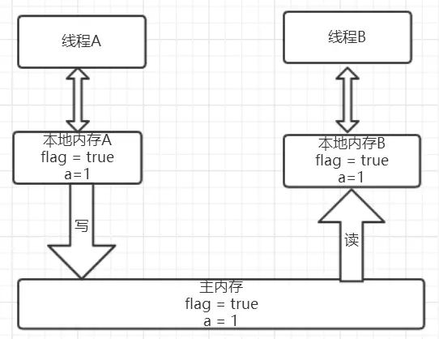
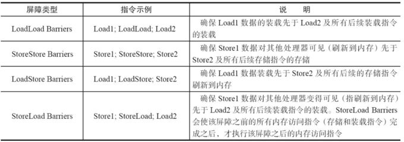
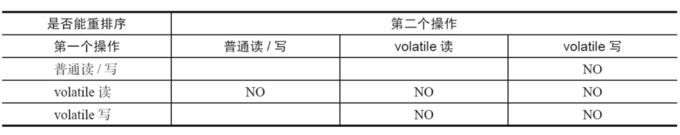
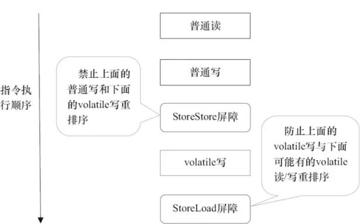
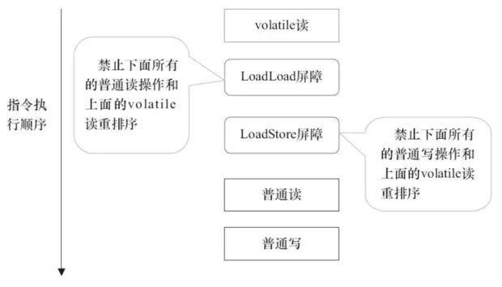

本人免费整理了Java高级资料，涵盖了Java、Redis、MongoDB、MySQL、Zookeeper、Spring Cloud、Dubbo高并发分布式等教程，一共30G，需要自己领取。
传送门：https://mp.weixin.qq.com/s/JzddfH-7yNudmkjT0IRL8Q
1. volatile简介
在上一篇文章中我们深入理解了java关键字
我们知道在java中还有一大神器就是关键volatile，可以说是和synchronized各领风骚，其中奥妙，我们来共同探讨下。
通过上一篇的文章我们了解到synchronized是阻塞式同步，在线程竞争激烈的情况下会升级为重量级锁。而volatile就可以说是java虚拟机提供的最轻量级的同步机制。
但它同时不容易被正确理解，也至于在并发编程中很多程序员遇到线程安全的问题就会使用synchronized。
Java内存模型告诉我们，各个线程会将共享变量从主内存中拷贝到工作内存，然后执行引擎会基于工作内存中的数据进行操作处理。
线程在工作内存进行操作后何时会写到主内存中？这个时机对普通变量是没有规定的，而针对volatile修饰的变量给java虚拟机特殊的约定，线程对volatile变量的修改会立刻被其他线程所感知，即不会出现数据脏读的现象，从而保证数据的“可见性”。
现在我们有了一个大概的印象就是：被volatile修饰的变量能够保证每个线程能够获取该变量的最新值，从而避免出现数据脏读的现象。
2. volatile实现原理
volatile是怎样实现了？比如一个很简单的Java代码：
instance = new Instancce() //instance是volatile变量
在生成汇编代码时会在volatile修饰的共享变量进行写操作的时候会多出Lock前缀的指令（具体的大家可以使用一些工具去看一下，这里我就只把结果说出来）。我们想这个Lock指令肯定有神奇的地方，那么Lock前缀的指令在多核处理器下会发现什么事情了？
主要有这两个方面的影响：
1.将当前处理器缓存行的数据写回系统内存；
2.这个写回内存的操作会使得其他CPU里缓存了该内存地址的数据无效
为了提高处理速度，处理器不直接和内存进行通信，而是先将系统内存的数据读到内部缓存（L1，L2或其他）后再进行操作，但操作完不知道何时会写到内存。
如果对声明了volatile的变量进行写操作，JVM就会向处理器发送一条Lock前缀的指令，将这个变量所在缓存行的数据写回到系统内存。
但是，就算写回到内存，如果其他处理器缓存的值还是旧的，再执行计算操作就会有问题。所以，在多处理器下，为了保证各个处理器的缓存是一致的，就会实现缓存一致性协议，每个处理器通过嗅探在总线上传播的数据来检查自己缓存的值是不是过期了，当处理器发现自己缓存行对应的内存地址被修改，就会将当前处理器的缓存行设置成无效状态，当处理器对这个数据进行修改操作的时候，会重新从系统内存中把数据读到处理器缓存里。因此，经过分析我们可以得出如下结论：
这样针对volatile变量通过这样的机制就使得每个线程都能获得该变量的最新值。
3. volatile的happens-before关系
经过上面的分析，我们已经知道了volatile变量可以通过缓存一致性协议保证每个线程都能获得最新值，即满足数据的“可见性”。
我们继续延续上一篇分析问题的方式（我一直认为思考问题的方式是属于自己，也才是最重要的，也在不断培养这方面的能力），我一直将并发分析的切入点分为两个核心，三大性质。
两大核心：JMM内存模型（主内存和工作内存）以及happens-before；三条性质：原子性，可见性，有序性（关于三大性质的总结在以后得文章会和大家共同探讨）。
废话不多说，先来看两个核心之一：volatile的happens-before关系。
在六条happens-before规则中有一条是：**volatile变量规则：对一个volatile域的写，happens-before于任意后续对这个volatile域的读。**下面我们结合具体的代码，我们利用这条规则推导下：
public class VolatileExample {
private int a = 0;
private volatile boolean flag = false;
public void writer(){
a = 1; //1
flag = true; //2
}
public void reader(){
if(flag){ //3
int i = a; //4
}
}
}
上面的实例代码对应的happens-before关系如下图所示：

加锁线程A先执行writer方法，然后线程B执行reader方法图中每一个箭头两个节点就代码一个happens-before关系，黑色的代表根据程序顺序规则推导出来，红色的是根据volatile变量的写happens-before 于任意后续对volatile变量的读，而蓝色的就是根据传递性规则推导出来的。
这里的2 happen-before 3，同样根据happens-before规则定义：如果A happens-before B,则A的执行结果对B可见，并且A的执行顺序先于B的执行顺序，我们可以知道操作2执行结果对操作3来说是可见的，也就是说当线程A将volatile变量 flag更改为true后线程B就能够迅速感知。
4. volatile的内存语义
还是按照两个核心的分析方式，分析完happens-before关系后我们现在就来进一步分析volatile的内存语义（按照这种方式去学习，会不会让大家对知识能够把握的更深，而不至于不知所措，如果大家认同我的这种方式，不妨给个赞，小弟在此谢过，对我是个鼓励）。
还是以上面的代码为例，假设线程A先执行writer方法，线程B随后执行reader方法，初始时线程的本地内存中flag和a都是初始状态，下图是线程A执行volatile写后的状态图。

当volatile变量写后，线程中本地内存中共享变量就会置为失效的状态，因此线程B再需要读取从主内存中去读取该变量的最新值。下图就展示了线程B读取同一个volatile变量的内存变化示意图。

从横向来看，线程A和线程B之间进行了一次通信，线程A在写volatile变量时，实际上就像是给B发送了一个消息告诉线程B你现在的值都是旧的了，然后线程B读这个volatile变量时就像是接收了线程A刚刚发送的消息。既然是旧的了，那线程B该怎么办了？自然而然就只能去主内存去取啦。
好的，我们现在两个核心：happens-before以及内存语义现在已经都了解清楚了。是不是还不过瘾，突然发现原来自己会这么爱学习（微笑脸），那我们下面就再来一点干货----volatile内存语义的实现。
4.1 volatile的内存语义实现
我们都知道，为了性能优化，JMM在不改变正确语义的前提下，会允许编译器和处理器对指令序列进行重排序，那如果想阻止重排序要怎么办了？答案是可以添加内存屏障。
内存屏障
JMM内存屏障分为四类见下图，

java编译器会在生成指令系列时在适当的位置会插入内存屏障指令来禁止特定类型的处理器重排序。
为了实现volatile的内存语义，JMM会限制特定类型的编译器和处理器重排序，JMM会针对编译器制定volatile重排序规则表：

"NO"表示禁止重排序。为了实现volatile内存语义时，编译器在生成字节码时，会在指令序列中插入内存屏障来禁止特定类型的处理器重排序。
对于编译器来说，发现一个最优布置来最小化插入屏障的总数几乎是不可能的，为此，JMM采取了保守策略：
需要注意的是：volatile写是在前面和后面分别插入内存屏障，而volatile读操作是在后面插入两个内存屏障
StoreStore屏障：禁止上面的普通写和下面的volatile写重排序；
StoreLoad屏障：防止上面的volatile写与下面可能有的volatile读/写重排序
LoadLoad屏障：禁止下面所有的普通读操作和上面的volatile读重排序
LoadStore屏障：禁止下面所有的普通写操作和上面的volatile读重排序
下面以两个示意图进行理解，图片摘自相当好的一本书《java并发编程的艺术》。


5. 一个示例
我们现在已经理解volatile的精华了，文章开头的那个问题我想现在我们都能给出答案了。更正后的代码为：
public class VolatileDemo {
private static volatile boolean isOver = false;
public static void main(String[] args) {
Thread thread = new Thread(new Runnable() {
@Override
public void run() {
while (!isOver) ;
}
});
thread.start();
try {
Thread.sleep(500);
} catch (InterruptedException e) {
e.printStackTrace();
}
isOver = true;
}
}
注意不同点，现在已经将isOver设置成了volatile变量，这样在main线程中将isOver改为了true后，thread的工作内存该变量值就会失效，从而需要再次从主内存中读取该值，现在能够读出isOver最新值为true从而能够结束在thread里的死循环，从而能够顺利停止掉thread线程。